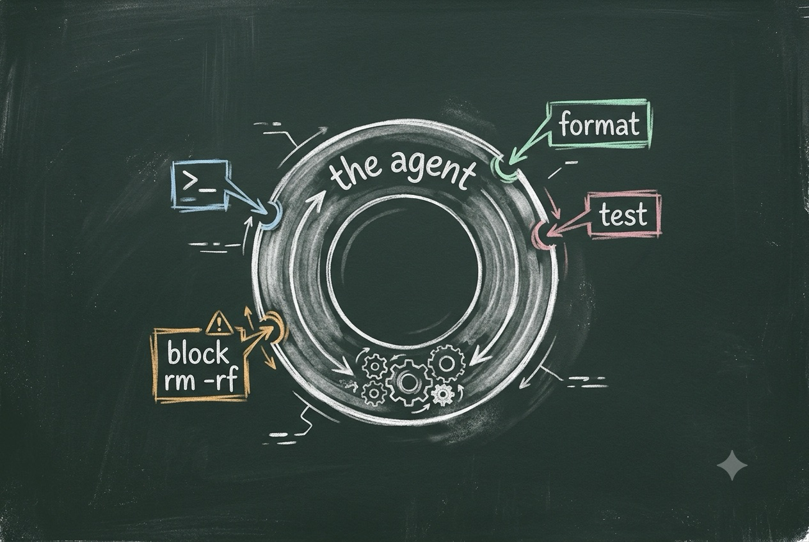

A BookBank Field Guide · Claude Code
Claude Hooks
Turn a helpful agent into one that
obeys your rules — deterministically.

A warm chalkboard illustration on a dark green-grey slate: a central loop labelled "the agent" with little gears, and around its edge several chalk-drawn tap points where shell scripts hook in — one labelled "format", one "test", one "block rm -rf". Chalk-white line art with soft pastel chalk accents (mint green, dusty pink, sky blue, amber), hand-drawn feel, faint chalk dust, generous negative space, no legible body text baked in. ~1200x800px, 3:2 landscape; keep the loop centred with safe margins, it is letterboxed into a 3:2 box.
Generate with your image agent, then drop the file here.
Told in the voice of The Crafter — calm, incremental, first-principles.
“A prompt is a suggestion. A hook is a law your tools can’t ignore.”
Grounded in the official reference at code.claude.com/docs/en/hooks.
The Path
What we’ll build understanding of
Eight short chapters. We start with the mental model, learn the lifecycle and the data contract, then spend a whole chapter turning hooks loose on a real Elixir/Mix project — format-on-save, a compile guard, and a test gate that won’t let the agent stop on red.
- What a Hook IsThe mental model
- The Lifecycle MapEvery event, when it fires
- Wiring It Upsettings.json & handlers
- The Input ContractThe JSON on stdin
- Talking BackExit codes & JSON decisions
- MatchersTargeting the right call
- The Elixir WorkbenchRecipes that earn their keep
- Guardrails & GotchasSecurity, debugging, order
- CheatsheetEverything, one page
claude --debug to watch it fire.